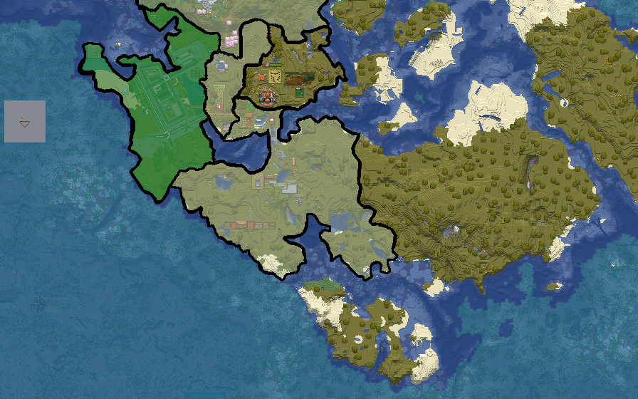

Varensk, officially the Republic of Varensk, is a country in Central Europe. It borders Crême Caramel to the north east, Lamporia to the east, and Andalusia to the south east; its southwestern boundary consists of a 46.6-kilometre (29.0 mi) coastline on the Azucar sea.
The country is mostly mountainous and forested, covering 20,271 square kilometres (7,827 sq mi), with a population of approximately 2.1 million people. Varene is the official language.
Varensk has a predominantly temperate continental climate, with the exception of the Varensk littoral and the Vert Alps. Maribor, the capital, is geographically situated near the centre of the country.
Other larger urban centers include Visegrad, Port St.Graham, Ravenik, Velenje, Železnik, and Borovec.
Etymology
The name Varensk etymologically means 'land of the Varens'. The origin of the name Varen itself remains uncertain.
History
Prehistory to Varrus settlement
The area later known as Varensk has been inhabited since prehistoric times. There is evidence of human habitation from around 250,000 years ago. A pierced cave bear bone, dating from 43100 ± 700 BP, found in 1995 in Grotte Bov cave near the area described in the source document.
Geography
Varensk is in Central Europe and is mostly mountainous and forested. Its southwestern boundary is a 46.6-kilometre (29.0 mi) coastline on the Azucar sea. The source document also identifies the Varensk littoral and the Vert Alps as geographical/climatic features.

Governance and politics
The source document provides the country name and national profile but does not provide detailed information about the governmental structure or political system.
Economy
Detailed economic information is not provided in the supplied document.
Demographics
Varensk has a population of approximately 2.1 million people. Varene is the official language, while English is listed as a recognised regional language. The demonym is Varenski.
Culture
The national motto is Eden za Vse (“One for All”), and the national anthem is Domovina severa (“Homeland of the North”). The supplied document does not provide further cultural information.
See also
Notes
- List of character trivia, anything goes! Creation process, music, animal motifs, etc.
- List
References
The supplied document does not include formal references.
Further readings
No further readings are provided in the supplied document.
External links
No external links are provided in the supplied document.
Talk
This is a local mockup. The Talk tab is intentionally non-functional.